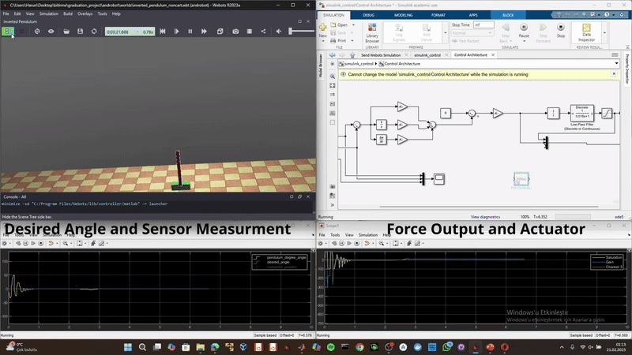
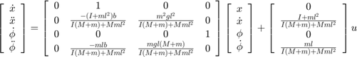
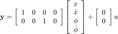

Inverted Pendulum¶
The inverted pendulum is a classic example in control system literature due to its inherent instability when open loop. In this system, a pendulum is mounted on a motorized cart. The control objective is to balance the pendulum by applying a force to the cart.

Overview¶
| Property | Value |
|---|---|
| Type | Control System Example |
| Difficulty | Beginner to Intermediate |
| Control Method | State-Space / PID |
| DOF | 2 (cart position, pendulum angle) |
1. Problem Setup and Design Requirements¶
System Description¶
A pendulum is mounted on a cart that can move horizontally. The system is unstable without control (the pendulum falls if not actively balanced).
Inputs and Outputs:
- Input: Force ( F ) applied to the cart
- Outputs: Pendulum angle ( \theta ) and cart position ( x )
Physical Parameters¶
| Parameter | Symbol | Value | Unit |
|---|---|---|---|
| Cart mass | ( M ) | 1.0 | kg |
| Pendulum mass | ( m ) | 0.05 | kg |
| Friction coefficient | ( b ) | 0.000001 | N/m/s |
| Pendulum length | ( l ) | 0.3 | m |
| Moment of inertia | ( I ) | ( m \cdot l^2 ) | kg·m² |
| Gravity | ( g ) | 9.81 | m/s² |
Design Criteria¶
For single-input, single-output (SISO) control (pendulum angle control):
- Settling time for ( \theta ) less than 5 seconds
- After an impulse of 1 N·s, the pendulum deviates no more than 0.05 radians from vertical
For state-space design (SIMO) control:
- A 0.2 m step in cart position: settling time under 5 seconds and rise time under 0.5 seconds
- The pendulum angle deviation remains within 20° (0.35 radians) of the vertical
- Steady-state error less than 2% for both outputs
2. Project Structure¶
inverted_pendulum/
├── controllers/
│ └── inverted_pendulum/
│ ├── inverted_pendulum_noncart.m # Main MATLAB controller
│ ├── simulink_control.slx # Simulink control model
│ ├── simulink_control_b.slx # Alternative control model
│ ├── state_space_modeling.slx # State-space model
│ ├── wb_motor_set_velocity.m # Motor velocity control
│ ├── wb_motor_set_position.m # Motor position control
│ ├── wb_motor_set_force.m # Motor force control
│ ├── wb_gyro_get_values.m # Gyroscope reading
│ ├── wb_accelerometer_get_values.m # Accelerometer reading
│ ├── wb_position_sensor_get_value.m # Position sensor reading
│ ├── wb_inertial_unit_get_roll_pitch_yaw.m
│ └── wb_robot_step.m # Simulation step
└── worlds/
└── inverted_pendulum.wbt # Webots world file
3. Mathematical Model¶
Equations of Motion¶
The nonlinear equations of motion for the inverted pendulum system:
Cart dynamics: $$M\ddot{x} + b\dot{x} + N = F$$
Pendulum dynamics: $$(I + ml^2)\ddot{\theta} + mgl\sin\theta = -ml\ddot{x}\cos\theta$$
Linearized State-Space Model¶
After linearization around the upright equilibrium ((\theta = 0)):
% State vector: [x, x_dot, theta, theta_dot]
% From inverted_pendulum_noncart.m
M = 1; % Cart mass
m = 0.05; % Pendulum mass
b = 0.000001; % Friction
g = 9.81; % Gravity
l = 0.3; % Pendulum length
I = m * l^2; % Moment of inertia
p = I*(M+m) + M*m*l^2;
A = [0 1 0 0;
0 -(I+m*l^2)*b/p (m^2*g*l^2)/p 0;
0 0 0 1;
0 -(m*l*b)/p m*g*l*(M+m)/p 0];
B = [ 0;
(I+m*l^2)/p;
0;
m*l/p];
C = [1 0 0 0;
0 0 1 0];
D = [0;
0];
4. State-Space Representation¶


System Block Diagram¶
flowchart TB
subgraph Reference["Reference Inputs"]
R1[/"Cart Position<br/>(x_d)"/]
R2[/"Pendulum Angle<br/>(θ_d = 0)"/]
end
subgraph Controller["Control System"]
subgraph StateEstimator["State Estimator"]
OBS[State<br/>Observer]
end
subgraph Feedback["Full-State Feedback"]
LQR[LQR<br/>Controller]
end
end
subgraph Plant["Inverted Pendulum System"]
MOTOR[Linear<br/>Motor]
CART[Cart<br/>Dynamics]
PEND[Pendulum<br/>Dynamics]
end
subgraph Sensors["Sensors"]
POS_S[Position<br/>Sensor]
ANG_S[Angle<br/>Sensor]
end
R1 --> LQR
R2 --> LQR
OBS --> LQR
LQR --> |"F"| MOTOR
MOTOR --> CART
CART <--> PEND
CART --> POS_S
PEND --> ANG_S
POS_S --> OBS
ANG_S --> OBS
style Reference fill:#e1f5fe
style Controller fill:#e8f5e9
style Plant fill:#ffebee
style Sensors fill:#f3e5f5Control Architecture¶
flowchart LR
subgraph FullStateFeedback["Full-State Feedback Control"]
subgraph States["State Vector x"]
X["x (cart position)"]
XDOT["ẋ (cart velocity)"]
THETA["θ (pendulum angle)"]
THETADOT["θ̇ (angular velocity)"]
end
subgraph Gains["LQR Gain Matrix K"]
K["K = [k₁, k₂, k₃, k₄]"]
end
subgraph ControlLaw["Control Law"]
CL["u = -K·x = -k₁x - k₂ẋ - k₃θ - k₄θ̇"]
end
end
States --> Gains
Gains --> ControlLaw
style FullStateFeedback fill:#e8f5e9State-Space Model Diagram¶
flowchart LR
subgraph Input["Control Input"]
U["F (Force on Cart)"]
end
subgraph StateSpace["State-Space Model<br/>ẋ = Ax + Bu<br/>y = Cx"]
subgraph StateVector["State Vector x"]
S1["x - Cart Position"]
S2["ẋ - Cart Velocity"]
S3["θ - Pendulum Angle"]
S4["θ̇ - Angular Velocity"]
end
end
subgraph Output["Outputs y"]
Y1["x (cart position)"]
Y2["θ (pendulum angle)"]
end
Input --> StateSpace
StateSpace --> Output
style Input fill:#ffcdd2
style StateSpace fill:#c8e6c9
style Output fill:#bbdefbLQR Control Design¶
flowchart TB
subgraph LQRDesign["LQR Controller Design"]
subgraph Weights["Weighting Matrices"]
Q["Q = diag([10, 1, 100, 10])<br/>State Penalty"]
R["R = 1<br/>Control Penalty"]
end
subgraph Riccati["Algebraic Riccati Equation"]
ARE["A'P + PA - PBR⁻¹B'P + Q = 0"]
end
subgraph GainCalc["Gain Calculation"]
GAIN["K = R⁻¹B'P"]
end
subgraph ClosedLoop["Closed-Loop System"]
CL["ẋ = (A - BK)x"]
end
end
Weights --> Riccati
Riccati --> GainCalc
GainCalc --> ClosedLoop
style LQRDesign fill:#e3f2fdControl Loop Detail¶
flowchart TB
subgraph ControlLoop["Inverted Pendulum Control Loop"]
X_D[/"x_d = 0<br/>(equilibrium)"/]
X[/"x (state vector)"/]
ERR((+<br/>-))
K_GAIN["-K<br/>LQR Gain"]
F["Force F"]
X_D --> ERR
X --> ERR
ERR --> K_GAIN
K_GAIN --> F
end
subgraph SystemDynamics["System Dynamics"]
CART_DYN["Cart: Mẍ + bẋ + N = F"]
PEND_DYN["Pend: (I+ml²)θ̈ + mglsinθ = -mlẍcosθ"]
end
F --> CART_DYN
CART_DYN <--> PEND_DYN
PEND_DYN --> |"θ, θ̇"| X
CART_DYN --> |"x, ẋ"| X
style ControlLoop fill:#e8f5e9
style SystemDynamics fill:#fff3e0Pole Placement Alternative¶
flowchart LR
subgraph PolePlacement["Pole Placement Design"]
POLES["Desired Poles<br/>p = [-2, -3, -4, -5]"]
PLACE["K = place(A, B, p)"]
STABILITY["All poles in LHP<br/>→ Stable system"]
end
POLES --> PLACE
PLACE --> STABILITY
style PolePlacement fill:#fff8e1State Variables¶
| State | Symbol | Description |
|---|---|---|
| ( x_1 ) | ( x ) | Cart position |
| ( x_2 ) | ( \dot{x} ) | Cart velocity |
| ( x_3 ) | ( \theta ) | Pendulum angle |
| ( x_4 ) | ( \dot{\theta} ) | Pendulum angular velocity |
5. Sensors and Actuators¶
Sensors¶
| Sensor | Webots Name | Purpose |
|---|---|---|
| Horizontal Position Sensor | horizontal position sensor |
Measures cart position |
| Hip Position Sensor | hip |
Measures pendulum angle |
Actuators¶
| Actuator | Webots Name | Control |
|---|---|---|
| Linear Motor | horizontal_motor |
Force applied to cart (max 100 N) |
6. Controller Implementation¶
Initialization¶
TIME_STEP = 16;
% Get devices
horizontal_position_sensor = wb_robot_get_device('horizontal position sensor');
wb_position_sensor_enable(horizontal_position_sensor, TIME_STEP);
hip = wb_robot_get_device('hip');
wb_position_sensor_enable(hip, TIME_STEP);
horizontal_motor = wb_robot_get_device('horizontal_motor');
LQR Controller Design¶
% Check controllability
Co = ctrb(A, B);
rank(Co) % Should be 4 (full rank)
% Design LQR controller
Q = diag([10, 1, 100, 10]); % State weights
R = 1; % Control weight
K = lqr(A, B, Q, R);
% Control law: u = -K * x
7. Quick Start¶
-
Open Webots and load
examples/inverted_pendulum/worlds/inverted_pendulum.wbt -
Configure MATLAB as the controller
-
Run the simulation - the controller will attempt to balance the pendulum
-
Observe results in the Simulink Scope or MATLAB workspace
8. Tuning Tips¶
- Increase Q(3,3) to reduce pendulum angle deviation
- Increase Q(1,1) to improve cart position tracking
- Decrease R to allow more aggressive control action
- Use PID tuning app in MATLAB for fine-tuning
Note: It is recommended to use PID tuning to further refine the control performance of the inverted pendulum system.
9. Control Strategies¶
PID Control¶
- Simple to implement
- Suitable for basic balancing
- May struggle with large disturbances
LQR Control¶
- Optimal for linear systems
- Better disturbance rejection
- Requires accurate state estimation
Pole Placement¶
- Direct control over system dynamics
- Choose poles in left-half plane for stability
- Trade-off between speed and control effort
Reference¶
- Title: Inverted Pendulum: System Modeling
- Source: University of Michigan Control Tutorials for MATLAB and Simulink (CTMS)
- URL: https://ctms.engin.umich.edu/CTMS/index.php?example=InvertedPendulum§ion=SystemModeling
Purpose: This reference serves as an educational resource for understanding the modeling of an inverted pendulum, a well-known unstable system. It explains how to derive the nonlinear equations of motion, linearize the system about its unstable equilibrium, and represent the system using both transfer functions and state-space models. Additionally, MATLAB code examples are provided for simulating the system and designing controllers, with PID tuning recommended as a means to improve control performance.